There has two tap on the top (Map/List and Pin Info.).
a. On this View, you can see the related recorded pin on the map / list.
b-1. If user press the recorded map pin before, you can see related pin information as an Edit Mode.
b-1. If user not selected the recorded pin before or directly pressed + button, you can see related pin information as Add Mode.
c. This button are switch the recorded pin to list view.
d. If user directly pressed this button, you can see related pin information as Add Mode using this middle target pin location.
e. Press this button will show this app information (with clear ALL map pin records button).
f. Press this button will directly goto user current location on the map.
Search Route
On this view you can see the related map pin information show as a list.
a. This button are switch the recorded list pin to a map pin.
How To Add Pin Information.
This section will descript how to add a new pin.
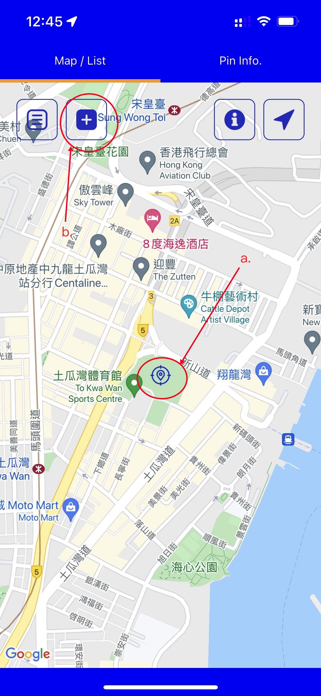
a. Locate target map pin position.
b. Press + button will goto Add Pin Tab View (As shown below).
You should provide those informations:
a. Title - will shows on map pin dialog, list view and push notification info.
b. This button will change the location to the map view target middle location (this button are mainly use on edit pin which change locations)
c. The latitude / longitude will show there for reference.
d. Address - will shows on list view and push notification info.
e. Description - will shows on map pin dialog, list view and push notification info.
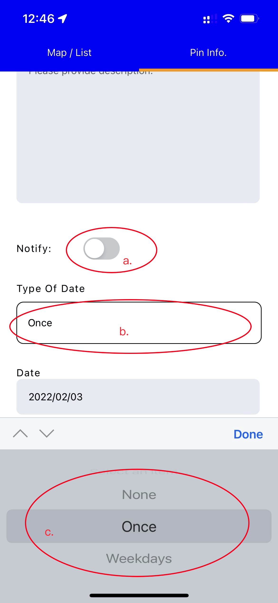
a. Notify - If you want to notify this pin, please turn on it.
b. Type Of Date - If you press it, it will show (c).
c. There are 3 different Type Of Date - None / Once / Weekdays.
c-1. None - Not provide any time on that pin (Also will NOT trigger the push notification).
c-2. Once - Provide specified date and time on that pin (Also provided push notification once of turn on 'Notify'). [As shown below]
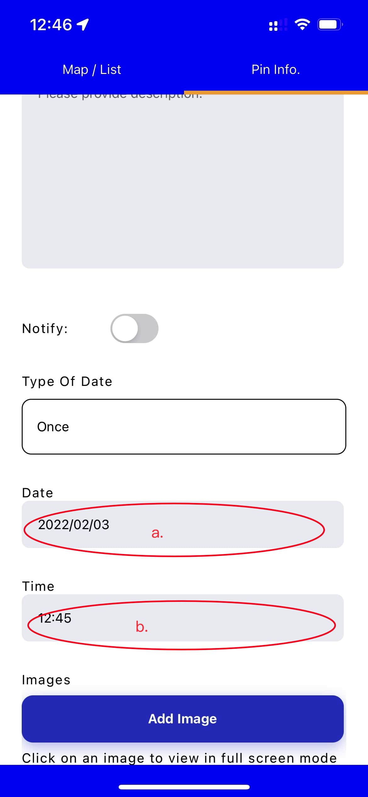
c-3. Weekdays - Provide specified weekdays and time on that pin (Also provided push notification repeatly on selected weekdays of turn on 'Notify'). [As shown below]
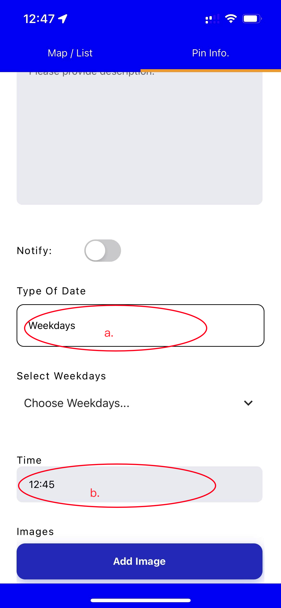
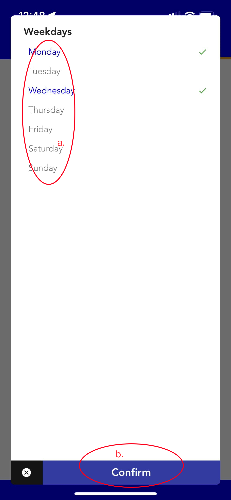
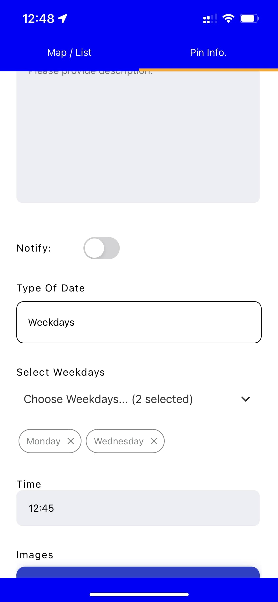
If you want to add reference images on it, you can follow below screen.
(Only the first image will be applied on the pin list view.)
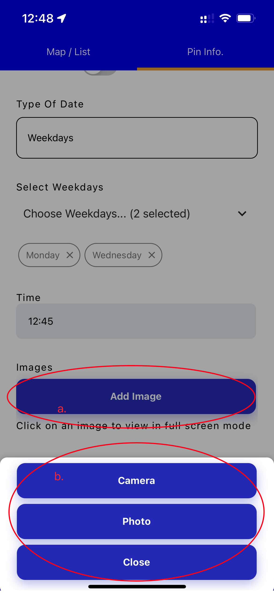
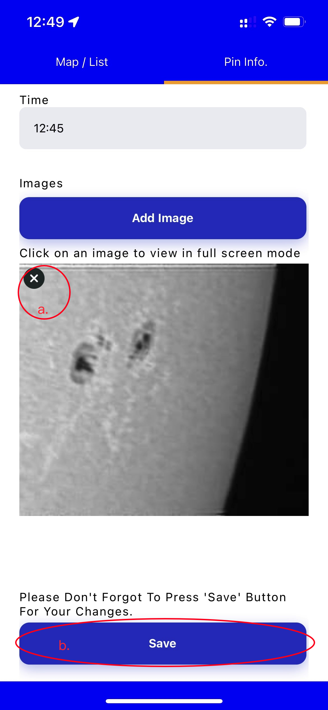
a. If you want to delete reference image, you can press 'x' button to delete it.
b. All of information are added / edited, please don't forgot to press 'Save' button to save it.
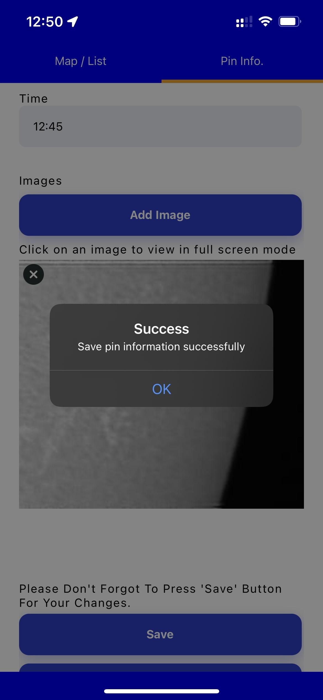
Bookmark Stops
When you press the map pin dialog / list view pin item / push notification dialog will directly go to Edit Piv View as shown below:
If you want to change the pin location, please follow these procedure:
1. When you press the map pin dialog / list view pin item / push notification dialog will directly go to Edit Piv View.
2. Tap 'Map/List' tab and relocate the target location.
3. Tap 'Pin Info.' tab to go back to edit pin view and then press the same target location button.
4. The latitute and longitude value will change to that location.
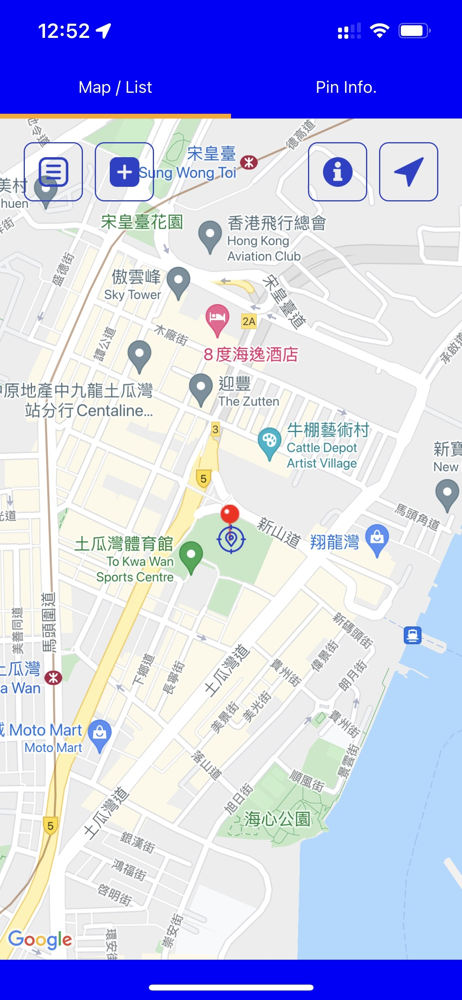
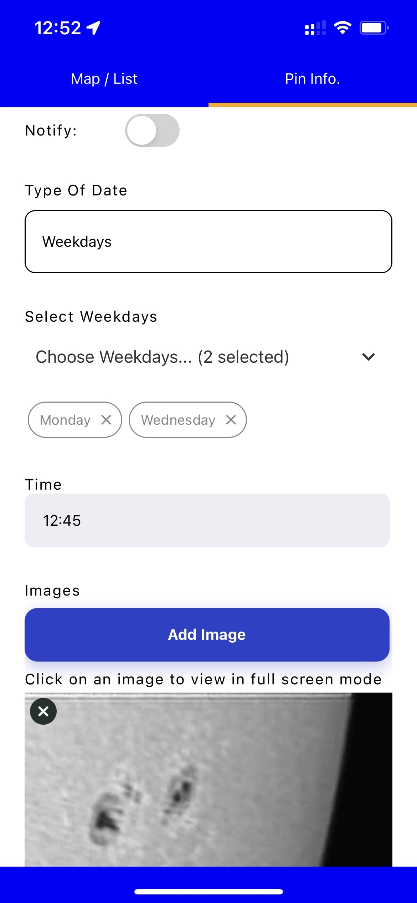
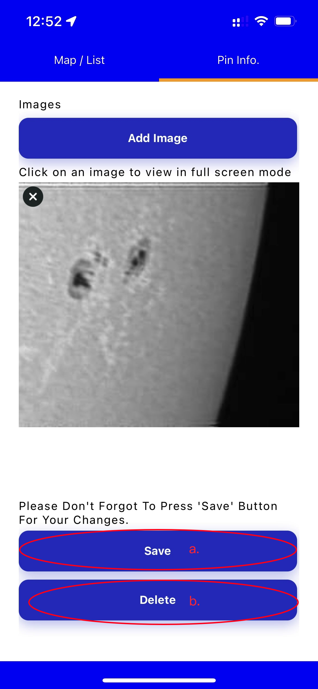
a. All of information are edited, please don't forgot to press 'Save' button to save it.
b. If you want to remove the pin, press 'Delete' button to delete it.
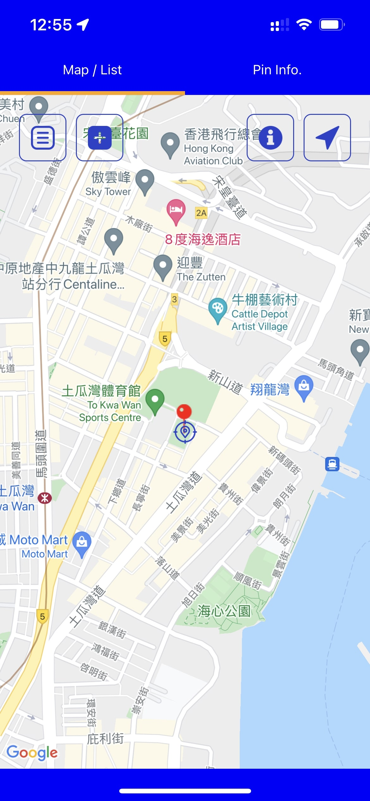
1. On this view, you can see the bookmarked stops list.
2. You can directly tap related stop table cell to see related routes in this stop.
3. Also you can slide to right to remove bookmarked stop (as shown below)
App Information
a. If you really want to clear ALL map pin records. You can press it and confirm the alert.
b. Otherwise close this information view by this button.